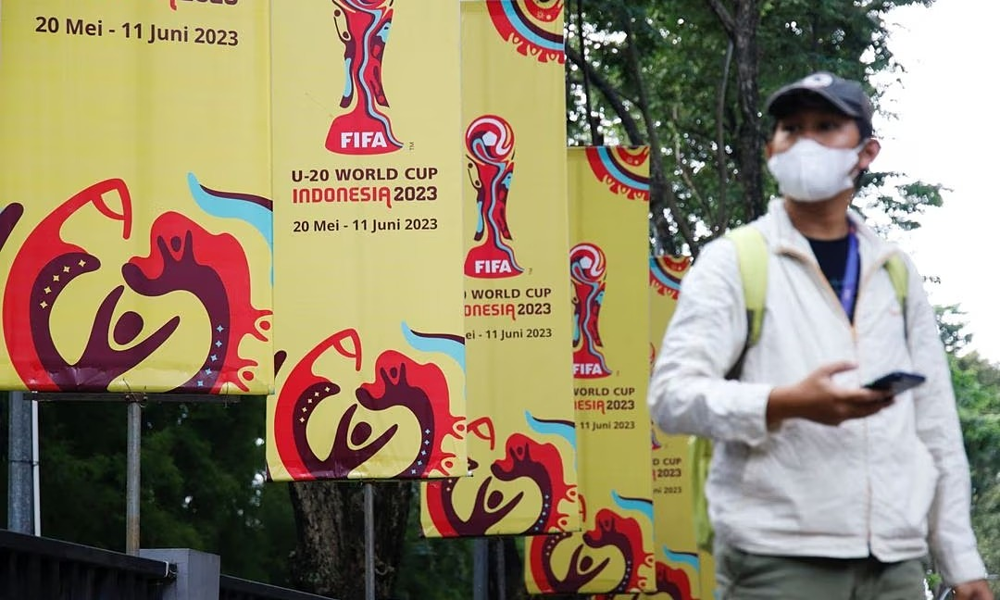

March 31, 2023 11:09 am | Updated April 01, 2023 01:56 am IST - New Delhi
Union Commerce, Industry and Textiles Minister Piyush Goyal
on Friday unveiled a new Foreign Trade Policy that moves away
from providing incentives to exporters, but lowers a few costs
for smaller firms and promises swifter clearances, along with a
one-time amnesty scheme for export obligation defaults. Replacing
the extant policy that had been in place since 2015, the new policy
kicks in from 2023-24 and aims to almost triple India’s goods and
services exports to $2 trillion by 2030, from an estimated $760 billion in 2022-23.
NASA sets up new office to help land humans on Mars
Abu Dhabi | Updated: March 31, 2023 21:06 IST
NASA has set up a new Moon to Mars Program Office at its headquarters
in Washington to help prepare the agency’s human spaceflight missions
to the Moon and beyond. According to NASA administrator, the office
will help the agency carry out bold missions, including landing the
first humans on the Moon. It is also tasked with helping the agency
set up a long-term presence on the Moon.

‘Buried dreams’: Players, fans dismayed after Indonesia loses U-20 hosting rights
March 30, 2023 14:00 IST
Indonesian players and fans were left dismayed on Thursday after the
country was dropped as host of the under-20 soccer World Cup following
outrage among politicians in the predominantly Muslim country about
Israel’s participation. International soccer’s governing body FIFA
stripped Indonesia of hosting rights on Wednesday over what an Indonesian
official said was a failure to honour its commitments to the tournament.